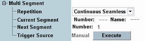
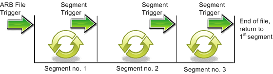

The following settings control how an ARB file containing several segments is processed.

Restart and user-defined marker signals are generated by the ARB generator while the ARB file is processed. The signal timing and periodicity is based on the number of samples in the file, assuming that the generator processes one sample after another until it receives a new trigger. For unsegmented files and automatically repeated segmented files ("Repetition: Auto", see below), the markers keep a fixed timing relative to the start of the processed file. If a "Continuous" or "Continuous Seamless" multi-segment repetition mode is active, the generator can jump to another segment or repeat segments. After a jump or a repetition, the restart and user-defined markers are no longer synchronous to the processed file. For instance, the restart marker no longer coincides with the first sample. Notice that restart and user-defined markers can still be used in "Continuous" or "Continuous Seamless" mode, e.g. to generate periodic marker signals. |
Selects a trigger mode for multi-segment waveform files. The general scheme for segments which are processed in consecutive order is depicted below. Use "Next Segment" to skip or repeat segments in the file.

"Continuous" | For "ARB > Repetition: Continuous" only: The generator cycles through the current segment. A trigger event causes immediate switchover to the beginning of the next segment. If the current segment is the last segment in the file, the file is restarted in the first segment. |
"Continuous Seamless" | For "ARB > Repetition: Continuous" only: After receiving a trigger event, the generator waits until the end of the current segment before it steps to the next segment. |
"Auto" | The generator processes one segment after another (like an unsegmented waveform file). |
For the repetitions "Continuous" and "Auto", the currently processed segment is displayed, with the segment number and segment name (if defined).
For the repetition "Continuous Seamless", a trigger event has been received for the displayed segment. The generator is still processing the previous segment or it is already processing the displayed segment. For the R&S CMW100/CMW with MUA, you can distinguish the two cases via the status command.
Remote command:Selects the number of the segment to be processed after the current segment. The selection is independent of the "Current Segment" - it is possible to jump forth and back in the segmented waveform file.
Selects the source of the trigger events used to switch to the next segment. Only "Manual" is available: The generator steps to the next segment every time you click the "Execute" button.
Remote command: